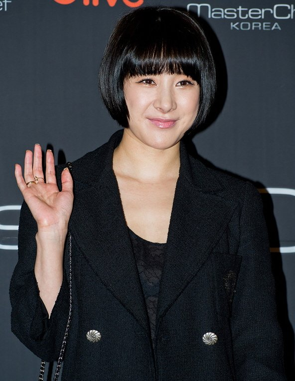
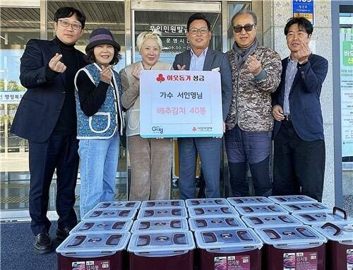

첫 결혼식에는 1억 원대 꽃장식이 놓였고, 린이 축가를 불렀어요. 두 번째 결혼식에는 꽃도 축가도 없어요. 서인영이 두 번째 결혼 날짜를 직접 밝히면서 예식 계획도 함께 공개했는데, 무엇이 달라지는지 정리했어요.
📷 사진 1 자리
▲ 사진: acrofan.com / CC BY-SA 3.0 / 위키미디어 공용
유튜브에서 직접 밝힌 날짜
발표는 11월 4일 서인영의 유튜브 채널 '개과천선 서인영'에서 나왔어요. 가족과 김장을 하던 날, 식사 자리에서 제작진에게 "나 26일 날 결혼해"라고 말한 거예요. 11월이냐는 질문에 "12월 26일"이라고 날짜를 짚었어요.
상대는 6세 연상인 콘텐츠 크리에이티브 기업 엔피(NP)의 최지훈 대표예요. 서인영은 2023년 2월 9세 연상 사업가와 결혼했다가 이듬해 이혼했고, 이번이 두 번째 결혼이에요.
꽃도 축가도 뺀 교회 스몰웨딩
예식은 교회에서 작게 치러요. 서인영은 "축가는 이번에 뺐어. 꽃도 다 뺐어"라며 "안 좋은 기억은 다 뺐어"라고 말했어요.
첫 결혼식과 나란히 놓으면 차이가 분명해요. 2023년 예식은 1억 원대 꽃장식으로 화제였고, 서인영은 나중에 이 장식이 협찬이었다고 밝혔어요. 그때 축가를 불렀던 린은 이번엔 하객으로 와요.
하객으로는 린 말고도 쥬얼리 멤버들과 일본에서 오는 친구들이 거론됐어요. 사회자는 아직 정하지 못했다고 해요. 옆에 있던 어머니는 "잘 사는 게 중요한 거지. 결혼식은 아무 소용없어"라며 딸의 선택에 힘을 실었어요.
신혼집은 같은 아파트 위층
신혼집도 정해졌어요. 지금 사는 남양주 아파트의 위층을 샀다고 해요. 서인영은 "나는 이제 돈 없다. 집 사는 데 다 썼다"며 제작진에게 가전제품 협찬을 넌지시 부탁하기도 했어요.
같은 영상에서는 아버지와 함께 '가문의 김치'를 담갔어요. 가평군에는 서인영 이름으로 배추김치 40통이 기부되기도 했어요.
📷 사진 2 자리
▲ 가평군에 전달된 서인영 이름의 배추김치 40통 기부 현장 · 사진=가평군 제공
돈 이야기는 방송에서도 이어져요. 5일 방송되는 E채널 '서인영의 유행꼰대' 6회에서 한때 한 달에 2억 원을 썼지만 지금은 용돈 100만 원을 받고, 통장 잔고가 4만 원이라고 털어놓아요. 이 회차에는 가수 겸 방송인 그리가 일일 수강생으로 나와 함께 '돈'을 주제로 이야기를 나눠요.
✍️ 내 경험 자리 — 직접 보고·듣고 느낀 점 3~5문장으로 바꿔 주세요 (네이버 D.I.A.는 경험이 담긴 글을 우대하고, 경험 없는 글은 검색에서 밀릴 수 있어요)
서인영은 12월 26일 교회에서 꽃·축가 없이 작은 예식으로 재혼해요. 근황 이야기는 5일 밤 9시 E채널 '서인영의 유행꼰대'에서 이어져요.

